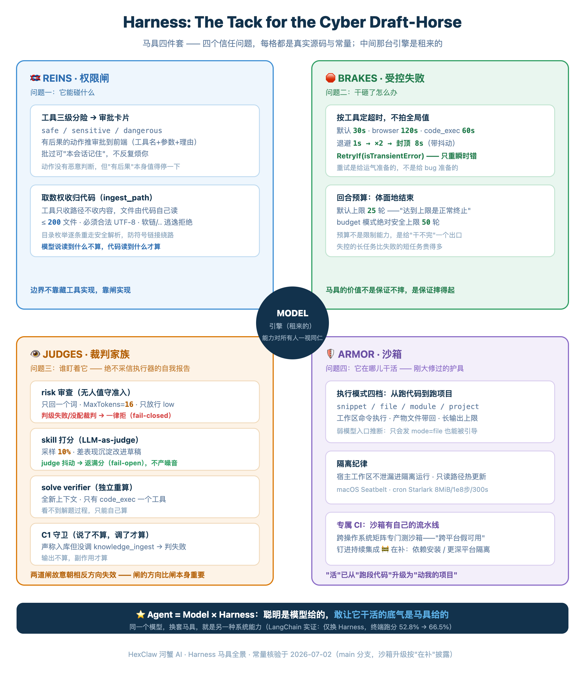

先查一个词。harness，名词，词典给的第一义项不是什么工程术语，是马具——套在牛马身上，让它拉得动车、还不至于跑飞的那整套东西。较真的话还能再准一点：harness 专指拉车干活的那一套（挽具），骑着玩的鞍子马镫不算——这个词打根上就是为干活的牲口准备的。缰绳管方向，嚼子管急停，车辕把力气传到车上，护具挡意外。行业这两年把包住模型的那层系统叫 Harness，这个选词其实相当诚实：之前有一篇我们管 7×24 替你干活的 Agent 叫"赛博牛马"——牛马要干活，先得套马具。
为什么这层东西值得单独写一篇？因为一个很少被说破的事实：模型的聪明是租来的。你调的 API 和你对手调的是同几个，模型能力上限对所有人一视同仁。真正属于你的，是模型外面那套马具——它决定同一个模型在你手里是个聊天框，还是一个敢放出去干活的系统。行业现在把这写成一个等式：Agent = Model + Harness。纲领篇里引过 LangChain 那组实验：模型一行没动，只换 Harness，终端任务跑分从 52.8% 拉到 66.5%。差的那十几个点，全是马具的活。
所以这篇不谈模型，只拆马具。拆法也不按组件清单来——组件清单是给维护者看的，用户其实只关心一件事：我凭什么敢让它干活？把这个问题掰开，是四个更小的问题：它能碰什么？干砸了怎么办？谁盯着它？它在哪儿干活？河蟹的引擎源码，恰好可以按这四问逐一对账。
Prompt（压轴） → Context（上篇） → Harness ▸ 本篇 → Loop（纲领篇）
Context 的记忆侧见 《会"做梦"的 Agent 记忆》
（马具全景。四个信任问题各占一角，中间是那台租来的引擎；护具那格刚完成一次大修）

问题一：它能碰什么——工具面与权限闸
马具的第一根带子是缰绳。河蟹引擎的工具循环是一条统一路径，走的是当下 Agent 的主流走法：每一轮都把完整的工具清单交给模型，模型返回工具调用就执行、继续循环，不返回就是答案。常规主路径不玩"这轮给不给工具"的分叉——能碰什么的边界，不靠藏工具来实现，靠闸来实现。（个别协议场景确实会收窄工具面：逼模型只用某个工具、或按来源铺一层工具地板，但那是路由和防错，不是拿"让它看不见"当安全手段。）
闸有两道。第一道是权限审批，而且默认就开着：每个工具带风险分级——safe / sensitive / dangerous 三档，有后果的动作（跑 shell、写文件、往外发消息、动能力）会打包成一张审批请求推到前端，附上工具名、参数和理由，等你点头。批过的可以勾"本会话记住"，同一个工具不用反复烦你。这道闸的形态很像银行柜台的复核：动作本身没有恶意判断能力，但"有后果"这件事本身就值得停一下——跑代码、改文件、动能力这些，交互场景下都得先问你一声，谁也不例外。
第二道闸在文件系统边上，做法更有意思。Agent 想把本地文件批量入知识库，调的工具叫 knowledge_ingest_path——注意它只接收路径，不接收内容。文件由代码自己去读：单次最多 200 个文件、必须是合法 UTF-8 文本、路径要过安全解析，软链接逃逸和 .. 穿越直接拒绝，目录枚举时每个条目还要重走一遍解析防止符号链接绕路。这个设计的潜台词值得琢磨：模型说它读到了什么不算数，代码读到什么才算数。把"取数"的权力从模型手里收回来，是比审批弹窗更根本的一种闸。
工具面还有一个更现代的麻烦：它不是出厂焊死的。MCP 让第三方工具随时可以接进来，Skill 也能安装、能新建——河蟹干脆给这件事修了条正路：内置的技能 / MCP 市场，从官方 hub 仓库拉目录，搜索、浏览、一键安装。马具上永远可以加新零件，进货渠道还是敞开的。这对 Harness 提出了一个自指的要求："改马具"这个动作本身，必须过马具的闸。河蟹把 create_skill、manage_skill、manage_mcp_server 一并归进 sensitive、须审批，代码给这类动作起的名字很准——"能力注入 / 能力变更"（回归测试里那个英文名更传神，capability mutation）。真正吃劲的是无人值守：没人在旁边点"允许"，这道闸怎么守？河蟹的做法不是把这些工具从工具箱里藏起来——那是老版本的手段，一份硬编码的剥离清单，如今已经退成一个空操作、只留作兼容；取而代之的是一张所有人可见、可调的自动放行矩阵。默认档（源码管它叫 function-first）下，无人值守的定时任务和 webhook 只自动放行读取、浏览、沙箱里的执行、文件编辑、对外投递这类日常活；直接在宿主机上跑 shell 这种"越界"执行，即便这样也一律转审批。而它死死按住不放的正是两类：改能力（上面那三件套）和给自己排新的定时任务（注释直接把它叫"自我复制回路"——job 造 job）。拉磨的牛马，不许自己改挽具，也不许自己再雇牛马——只是拦它的不再是"工具箱藏了工具"，是"闸说了不"。这跟本节开头那句正好合上：边界靠闸，不靠藏。
说了半天闸，落到实处是一个问题：这些闸是死板的一刀切，还是能按需拧的？设置里那页自动化权限就是答案——它把上面那张矩阵摊成一块你能亲手拨的面板：功能优先 / 严格审批 / 全功能 三档任你拨（引擎其实还认一个"平衡"态，只是桌面端没给它单开一张卡、免得档位过载），每挡旁边直接写着"哪类能力自动跑、哪类转审批"，连"安装 / 修改能力"都单列一行摆在那儿。刚接进一个 Webhook、心里没底？先切"严格审批"，让每个自动任务都先来问你，观察几天再放开。比全局档位更细的一层是任务级授权：不必为一个任务松掉全局默认，只给这一个任务放行它要的能力，任务一删、授权自动回收——没有内置类别的 MCP 连接器工具，无人值守下走的正是这条任务级授权。"敢让它干活"因此不是要么全放、要么全禁的赌气话，而是一把有刻度的闸。顺带划一下和下篇的地界：markdown 形态的 Skill 是另一种东西——那是写给模型的指令，不是工具，归收官篇管。
问题二：干砸了怎么办——受控失败
牛马会失蹄，工具会超时。马具的价值不是保证不摔，是保证摔得起。河蟹给每次工具执行包了一层重试壳，参数都不大，但每个都有讲究：
最后一行是灵魂。源码里那句策略注释写得很直白："只对明确的瞬时错误重试，未知错误保守处理。"网络抖一下值得再试，参数就是错的重试一百遍也是错的——重试是给运气准备的，不是给 bug 准备的。浏览器给 120 秒、跑代码给 60 秒，也是按各自的真实耗时分布定的，不是拍一个全局值了事。
比单次失败更需要管的是"一直不结束"。工具循环有回合预算：默认上限 25 轮，注释里专门解释了这个数——给足正常任务空间，同时"达到上限是正常终止"，不是报错；budget 模式下另有一个 50 轮的绝对安全上限兜底。这两个数在纲领篇里出现过一次，放在这里重读会有新的体感：预算不是限制能力，是给"这活干不完"一个体面的结束方式。失控的长任务比失败的短任务贵得多。
问题三：谁盯着它——不信任执行器的裁判家族
这是全篇我最想展开的一节，因为它对应马具上最反直觉的一件东西：给牛马配一个不归牛马管的监工。金融系统里这叫 maker/checker：办业务的和复核的必须是两个人。河蟹引擎里散布着一整个裁判家族，共同点只有一条——绝不采信执行器的自我报告。
第一个裁判是无人值守准入的加严位。无人值守到底能碰什么，默认由问题一那张矩阵说了算；但引擎在矩阵之上还留了一个可插拔的更严裁判——一个独立的风险审查器：把任务描述交给它，prompt 只要一个词 low / medium / high，这次调用的 MaxTokens 只给 16（注释很省："a one-word verdict — keep it cheap"，一个单词的裁决，保持便宜）。它的裁决规则极严：只放行 low；medium、high、判级失败、连裁判都没配——一律拒，回复不是明确的 low 就默认往 high 靠。源码写得很直白：它默认不覆盖矩阵、只做"更紧的那一手"，留给需要更保守策略的部署自己插进来。但它这套设计本身是教科书级的 fail-closed：守门的闸，门坏了就锁死，绝不敞开。
第二个裁判管质量打分：Agent 每次工具调用的表现，由 LLM-as-judge 抽样评估，差的表现会沉淀成技能改进草稿。它的设计取舍注释值得原文抄下来：
"每次工具调用都打分会消耗 LLM 配额，因此用采样率（默认 0.1 = 10%）……LLM 调用失败 / 超时 / 解析失败时返回 10 分（fail-open），不要因为 judge 抖动产生误报 draft 噪音。"
—— skill_judge.go 顶部注释（这篇引用的"金句"全部来自代码注释，不来自演讲台）
把这两个裁判摆在一起看，有一个容易错过的对称：风险审查坏了返回 high（fail-closed），质量打分坏了返回满分（fail-open）——同一个系统里，两道闸故意朝相反的方向失效。这不是不一致，是一致性最高的地方：守门的闸，坏了必须锁死；锦上添花的闸，坏了必须让路。闸的方向比闸的存在更重要，装闸之前先想清楚它坏掉的那天该往哪边倒。
第三个裁判管数学题这类可验算的活：解题的 Agent 给出答案后，一个叫 verifier 的子角色在全新上下文里用代码独立重算一遍再比对——它被限定只有 code_exec 一个工具，看不到解题过程，只能自己算。第四个裁判最简单也最锋利，管"说了不算"：定时任务声称把资料存进了知识库？查工具调用记录：
任务嘴上说"入库完成"，但工具调用列表里没有那次 knowledge_ingest——判失败，理由写得毫不客气："报告了成功但从未调用入库工具，什么都没存。"这七行代码浓缩了整个裁判家族的世界观：说了不算，调了才算；输出不算，副作用才算。另外还有一位管秩序的：多 Agent 派生有专门的扇出护栏，跨树总量一到上限就拒派新的子任务——那是 Loop 纲领篇的地界，这里不重讲。
问题四：它在哪儿干活——沙箱，刚大修过的那件护具
前三个问题河蟹都能拿出成套的答案，第四个要分开说，先说有的。跑代码的 code_exec 走的是一个独立的沙箱抽象层，配置可以热更新（改了限制不用重启，直接重建沙箱实例）；macOS 上有 Seatbelt 侧写约束。定时任务那边的脚本沙箱在"赛博牛马"那篇详细写过：Starlark 解释器、单次 HTTP 抓取封顶 8 MiB、一亿步指令上限、300 秒超时——一套编译进笼子里的自愈脚本。
这件护具最近刚完成一次大修。老版本的 code_exec 更接近代码片段执行器：给一段代码、跑出一个结果，仅此而已。大修把执行模式扩成了四档——snippet / file / module / project：从跑一段代码，到跑仓库里的某个文件、某个模块，再到在工作区里执行项目命令；产物文件（图表、CSV、日志）能带回来，长输出有上限治理，未经授权的宿主路径不会泄漏进隔离运行（project 模式只暴露你显式授权的项目根，secrets deny 规则再优先遮蔽一层），甚至给弱工具模型留了入口推断——只会发 mode=file 的模型也能被引导到正确的执行方式。最能说明分量的是最后一件事：这套沙箱有了自己专属的 CI，一条跨操作系统矩阵的流水线专门测它——"跨平台假可用"这个老毛病，被钉进了持续集成。马具四件套至此都在岗。护具当然永远有下一层可打（更完整的依赖安装、更深的平台隔离都在路线图上），但"敢让它干活"的"活"字，已经从"帮我跑段代码"升级成了"帮我动我的项目"。
这套沙箱最容易被忽略的一层，不是那几个资源上限，是它顺手把你的秘密挡在外面。哪怕你用 project 模式把整个 $HOME 交给它当工作区，沙箱的默认 deny 规则仍会优先遮蔽几类路径：外部凭据目录 ~/.ssh、~/.aws、gcloud、gnupg，还有河蟹自己的命门——主密钥 master.key（能解开全部静态加密凭据）、配置文件 hexclaw.yaml（各家 provider 的 API key）、加密库 data.db。再加一条 DenyLoopback：跑代码可以出网抓页面、调 API，但打不到本机回环——不给无人值守的 Agent 留经 loopback 去戳本地管理端口给自己提权的机会（一个教科书级的 SSRF 自提升面）。这里得诚实标一条平台边界：这道回环封锁在 macOS 上由 Seatbelt 从沙箱层强制，Linux 目前还没隔离 net namespace、回环仍可达，是个已知能力缺口，得靠更高层或部署侧补位。但笼子的意图很清楚：拦住的不只是它能跑多久，还有它能读到什么、能连到哪儿。
行业顶流都在做同一件事，只是叫法不同
把视线抬起来会发现，头部模型厂商的 Agent 产品文档里，最厚的章节全是马具——这层如今通用的名字就是 harness（"马具"只是它的词典直译，被我们顺着牛马那条线借来当比方）；可一落到各家自己的产品文档，名字又五花八门：OpenAI 的 Agents SDK 把输入输出防护做成一等公民叫 guardrails，Codex 的本地沙箱按平台分层——macOS 用 Seatbelt，Linux/WSL2 主路径走 bubblewrap（CLI 的 sandbox helper 另有 Landlock/seccomp 口径），Windows 用原生 Windows sandbox；Anthropic 给 Claude 的 Agent 体系写了整套 permissions 与 sandboxing 文档，还把自家的沙箱运行时开了源——那份开源说明点破的威胁模型，和前面那套 secrets 遮蔽是同一个：没有网络隔离，被攻破的 Agent 能顺手把你的 SSH key 传出去；Google 的 ADK 用 callbacks 在工具调用前后设卡。措辞各家各的，方向完全一致——连卖模型的都在反复告诉你：光有模型不敢上路。这大概是"Agent = Model + Harness"这个等式最有力的背书：写等式右边第一项的人，在拼命完善第二项。学术圈今年也把话挑明了，有篇论文的标题就叫 Harness as an Asset——把马具当资产。这四个词，就是"模型是租来的、马具是自己的"那句话的学术拼法。
这里得顺手正个名，因为"Harness Engineering"这个词今年正被两拨人往两个方向拉，很容易看串。OpenAI 二月那篇讲 Codex 的文章、还有 Martin Fowler 的同名长文，用它指一种研发范式——工程师不再亲手写代码，改为写约束（AGENTS.md、lint 规则、Ralph 那种自循环），让 Agent 去写你的整个代码库；那是"用 Agent 造软件"的马具，朝着开发台。本文从头到尾说的是另一层——运行时包住模型、让你产品里那个 Agent 敢动手又不闯祸的马具，朝着运行时。两个都真实、都在爆发，只是别混成一件事。这个系列讲的是后者；前者更贴近我们那篇 Claude Code SOP 的地界，哪天单开一篇细讲。
回到系列的线索上。上一篇说，检索链路负责让 Agent 每一轮看到的东西可信；这一篇说的是，看完之后它做的事情受控。证据可信、行动受控，两层合起来，"敢让它干活"这句话才算有了工程含义，而不是一句胆量。
但马具还不是故事的全部。你大概注意到了，这篇讲的全是硬闸——审批、超时、裁决、笼子，全是代码强制执行的东西。可是引擎每一轮塞给模型的那几千字 system prompt 里，还写着大量"软"的约束：它该是什么性格、什么纪律、遇到什么该问不该做。硬闸管住失败，软约束定义期望——这层最软、也最底层的东西，行业管它叫 Prompt，四代范式的第一代。下一篇收官，讲它为什么没死，而是沉成了协议。
四代范式系列
▸ Loop · 纲领 扒开一个开源 Agent 的源码，从 Prompt 到 Loop 逐层对完这四代范式
▸ Context · 资料侧 RAG 真正的难点不是召回，是把"像答案的噪声"挡在 Loop 外面
▸ Context · 记忆侧 会"做梦"的 Agent 记忆：河蟹的梦在你本机
▸ Prompt · 压轴 人人都说它死了，其实它沉下去，成了 Agent 最底层的协议（收官篇，即将发布）
更多往期
▸ 河蟹 AI 的"赛博牛马"养成记：把一句话编译成会自愈的沙箱脚本
▸ 河蟹 AI 背后的 Claude Code SOP：设计驱动 × 测试闭环 × 多 Agent 协作
参考来源
· OpenAI，Agents SDK — Guardrails 官方文档；Codex 沙箱（macOS Seatbelt / Linux·WSL2 bubblewrap，CLI helper 另有 Landlock+seccomp / Windows 原生 sandbox，unelevated 回退用受限令牌）
· Anthropic，Claude Agent 体系 permissions / sandboxing 文档；开源 sandbox-runtime
· Google，Agent Development Kit（ADK）— callbacks 机制
· LangChain，同模型（GPT-5.2-Codex 固定）换 Harness 的 Terminal-Bench 2.0 对照实验（52.8% → 66.5%，详见本系列纲领篇）
· Harness as an Asset: Enforcing Determinism via the Convergent AI Agent Framework (CAAF)，arXiv:2604.17025——"马具即资产"的学术表达
· 术语正名：OpenAI《Harness engineering: leveraging Codex in an agent-first world》(2026-02)、Martin Fowler 同名文——指"人写约束、Agent 写代码"的研发范式，与本文"运行时马具"是同名两义
· maker/checker（四眼原则），银行业通行的双人复核控制
· 本文全部河蟹侧机制与常量核验于 2026-07-04，对应仓库 main 分支源码（code_exec 沙箱升级、snippet / file / module / project 四档执行模式与跨平台 CI 均已并入 main）